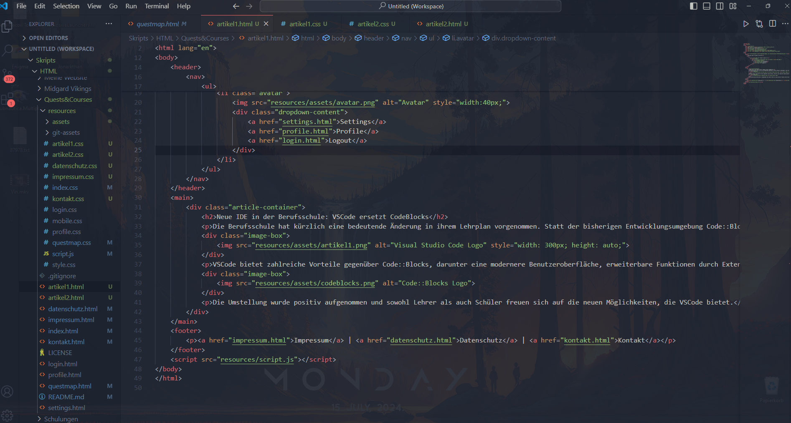
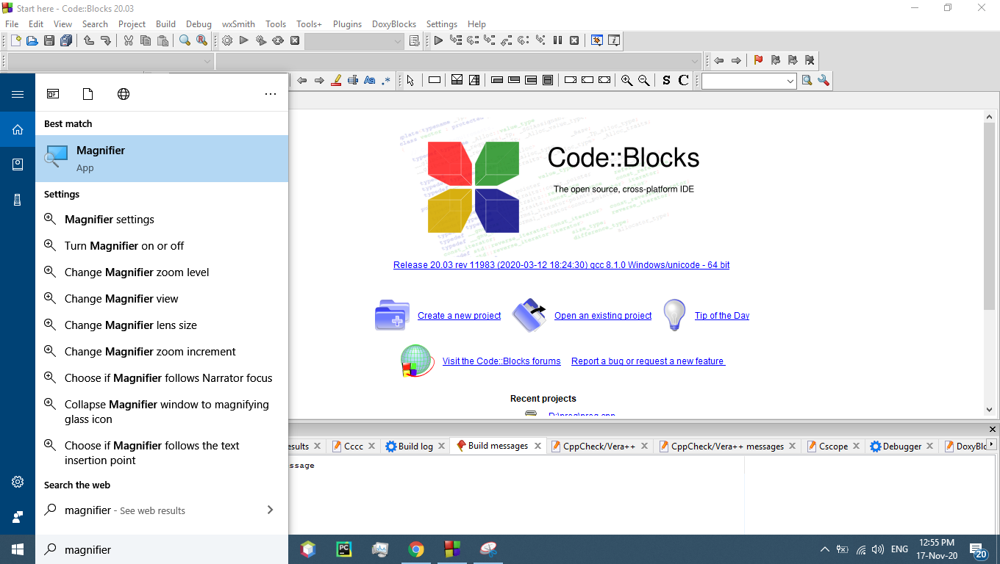

Neue IDE in der Berufsschule: VSCode ersetzt CodeBlocks
Die Berufsschule hat kürzlich eine bedeutende Änderung in ihrem Lehrplan vorgenommen. Statt der bisherigen Entwicklungsumgebung Codeblocks wird nun Visual Studio Code (VSCode) verwendet, um den Schülern das Programmieren in C beizubringen.

VSCode bietet zahlreiche Vorteile gegenüber Codeblocks, darunter eine modernere Benutzeroberfläche, erweiterbare Funktionen durch Extensions und eine bessere Integration von Versionskontrollsystemen wie Git.

Die Umstellung wurde positiv aufgenommen und sowohl Lehrer als auch Schüler freuen sich auf die neuen Möglichkeiten, die VSCode bietet.